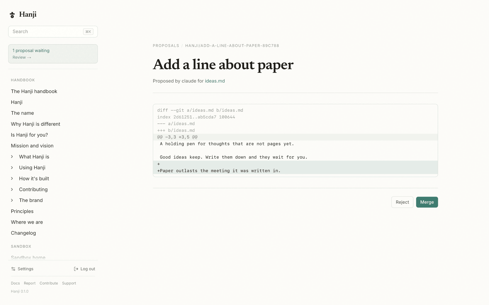

Agents
Agents get their own surface. Two of them, really: raw git, which they already know, and a small MCP server for the times a scoped, hosted read helps. Both go through the same permission check a person does.
Mint a token
An agent authenticates with a bearer token, scoped to what it may touch - a whole mount, a folder, or exactly one page on a pages mount (a work mount whole, a think mount whole, a folder of boards or one board), the same path grants people have.
pnpm hanji token <name> <mount[/folder|/page.md]=read|read+propose|read+comments|...>...
# a read-only agent for the handbook
pnpm hanji token docs-reader handbook=read
# an agent that can also propose changes to two mounts
pnpm hanji token my-claude handbook=read+propose notes=read+propose
# a narrow one: read one folder, propose to a single page
pnpm hanji token intern notes/reviews=read notes/reviews/draft.md=read+propose
# an agent that may also read a page's comments
pnpm hanji token reviewer notes=read+comments
The command prints the token once. A read scope lets the agent search and read within its grant. A read+propose scope adds the right to propose changes there. A read+comments scope adds the right to read that page's comments too - stack all three as read+propose+comments if the agent needs the full run. There is no write scope for a token: editing to base is for people, and an agent always proposes. Anything outside its grants the agent cannot see, and cannot even tell exists - a locked page and a missing page answer identically. Content visibility rules never widen a token: an "everyone" rule speaks to people, and an agent holds exactly what it was granted. See Permissions.

Connect it
The MCP server speaks Streamable HTTP on 127.0.0.1:4101. Point your agent at it with the token.
claude mcp add hanji --transport http http://localhost:4101/mcp \
--header "Authorization: Bearer <token>"
The tools
| Tool | What it does | Needs |
|---|---|---|
hanji_list_pages | List the pages the token can read, 500 at a time, with nextCursor for the rest | read |
hanji_get_page | Fetch one page's Markdown, or just one section with anchor | read |
hanji_search | Search across readable mounts: ranked hits, matched and missing terms, a section anchor per hit | read |
hanji_links | The link graph around one page: what points here, and where this page points | read |
hanji_propose | Propose a page change as a branch, and a PR where GitHub is connected | read+propose |
hanji_list_comments | Read one page's comments (threads, quotes, replies) by mount and path | read+comments |
hanji_changes | What changed since a moment: commits with authors and pages, edits not yet committed, and comments | read |
What a search answers with
hanji_search answers an envelope:
{ "hits": [], "unit": "page", "total": null, "totalAny": null, "facets": null,
"missingEverywhere": [], "suggestions": [], "undated": 0, "nextOffset": null,
"state": "indexing" }
Each hit carries mount, path, title, snippet, score, matched, missing, marks, headingPath, anchor, passages and updatedAt. Read them in that order of trust. snippet is the short preview - passages[0] when a passage actually got cut, falling back to the page's own description and then its title on a full-search hit whose cut comes back blank. A tier: "title" hit is the exception: it carries only title, mount, path and score, with snippet, headingPath, anchor, passages, matched, missing and marks empty and updatedAt null. matched and missing say which of your terms the page actually holds, after aliases and stemming, so a hit that is missing the term you care about is one you can drop without reading it; marks names the spellings actually found in the text, which is how a page reached through a synonym tells you which word it really uses. score ranks within one response and is normalized per query: it is not comparable across queries, and thresholding on it is a mistake. There is no coverage field to filter on. missingEverywhere names the terms that matched nothing anywhere in the scope you asked for, your grants and any mount or pathPrefix filter included.
An envelope carrying state: "indexing" means the index is currently being rebuilt: the empty hits reflect that window, so retry once the rebuild finishes rather than reading it as an empty corpus. The field is absent the rest of the time.
anchor is the hit's best section, written <block_hash>:<ord> - empty on a title-tier hit, since a title match has no section behind it. Hand a non-empty anchor straight to hanji_get_page and you get that section's Markdown instead of the whole page. If the block has been edited since, the answer is the whole page with anchorResolved: false, never "Not found." - that string keeps its one meaning, which is "you may not see this, or it does not exist".
| Parameter | Values | What it does |
|---|---|---|
limit | 1-50, default 20 | Hits to return |
offset | 0-499 | Skips ahead through the 500 best matches; nextOffset comes back null once you have them all |
mount | a mount name | Narrows to one mount - curl's mount=, a separate parameter from the web search palette's m= |
pathPrefix | a folder name, or a prefix | No slash matches that folder name at any depth; a slash makes it a literal prefix |
granularity | page | section | section returns one hit per section instead of one per page; the envelope's unit reports back which |
tier | title | A name lookup instead of a search: title-only, at most 8 rows, no passages, ignoring mount, pathPrefix and since |
exact | boolean | Computes total, totalAny and facets too - a second, unbounded pass most callers skip |
suggest | boolean | Fills suggestions with page matches when nothing hit; otherwise the array stays empty |
bigramPrefix | boolean | Lets a single Korean syllable match as a prefix, for a query still being typed |
since | ISO 8601 timestamp | Drops pages with no date and counts them in undated; compares on the calendar day, since a page's own date can be date-only, while hanji_changes compares on the instant; an invalid value is a 400 naming the expected format over curl, and a tool error over MCP |
Paging the page list
hanji_list_pages answers { pages, nextCursor }, 500 rows at a time. Narrow it first with mount or pathPrefix, the same two filters search takes, or raise limit up to 2000 if 500 rows at a time is too chatty.
Pass nextCursor back as cursor until it comes back null. A cursor is a position, never a permission: decoding it only tells the query where to resume, and that resume point still runs inside your own scope. A cursor minted for a mount you cannot read decodes fine and simply skips you forward through whatever you may see - it reaches nothing wider. Only a cursor that decodes to nothing readable as a position gets refused - garbled, or not one of ours - a 400 over curl, a tool error over MCP.
What links answers with
hanji_links returns { backlinks, outlinks }.
A backlink carries mount, path, title and via: "title" | "stem" - which kind of name the linking page used to reach this one. It also carries ambiguous: true when that name, title or path stem, belongs to more than one page you can read, so you know a plain link by that name could have landed on any of them. A page linking here by both its title and its stem still appears once in backlinks, credited to via: "title".
An outlink carries text plus mount, path and title when it resolves to a page you can read. When it does not, it carries text alone - the same shape a dangling link gets, so a link to a page outside your grant reads identically to a link to nothing at all.
No MCP client? curl works
Every tool is also a plain HTTP endpoint on the same port, same token, no JSON-RPC envelope and no streaming to parse. For scripts, cron jobs, and agents that can run a shell but not an MCP client:
curl -H "Authorization: Bearer <token>" "http://localhost:4101/pages?limit=100"
curl -H "Authorization: Bearer <token>" "http://localhost:4101/page?mount=handbook&path=install.md"
curl -H "Authorization: Bearer <token>" "http://localhost:4101/page?mount=handbook&path=install.md&anchor=1k2j3h4:0"
curl -H "Authorization: Bearer <token>" "http://localhost:4101/search?q=permissions&limit=5" | jq '.hits[].path'
curl -H "Authorization: Bearer <token>" "http://localhost:4101/links?mount=handbook&path=install.md"
curl -H "Authorization: Bearer <token>" "http://localhost:4101/comments?mount=notes&path=idea.md"
curl -H "Authorization: Bearer <token>" "http://localhost:4101/changes?since=2026-08-27T00:00:00Z" | jq '.items[].subject'
curl -H "Authorization: Bearer <token>" "http://localhost:4101/propose" \
-d '{"mount":"notes","path":"ideas/from-cron.md","title":"An idea","content":"# It\n","note":"Confident on wording; check the anchor link."}'
/pages, /search, /links, /comments and /changes answer JSON; /page
answers raw Markdown, or JSON { content, anchorResolved } when you pass an
anchor - an empty anchor= still counts as passing one, and gets that same
JSON form back with anchorResolved: false, the shape a stale anchor answers
with too. /propose answers the branch (and PR URL where GitHub is
connected). The permission check is the same one the MCP tools run, and an
unknown path answers with a map of the surface.
/search, /pages, /page, /links, /changes and /comments are strict
about their query string: a parameter they do not recognize, misspelled or
otherwise, is a 400 naming it, never a filter silently dropped. Every MCP tool
refuses the same way, naming the key in a tool error. A blank value (&since=)
counts as no value at all, the same as leaving the parameter off entirely. A
boolean parameter takes true, false, 1 or 0 and nothing else.
Four things changed shape in 0.7. /search answered a bare array and
now answers the envelope above. /pages answered every row and now answers
{ pages, nextCursor }, 500 at a time. /changes answered a bare array and
now answers { items, truncated }, with each item's paths capped at twenty
and the rest counted in omittedPaths. And all three got strict, along with
/page, /links and /comments: a stray parameter used to be silently
ignored, and a limit over the bound used to be silently clamped - both are
a 400 over curl now, and a tool error over MCP, on every tool. If you have
a script reading the old shapes, .hits, .pages and .items are the one
edit each needs.
Propose, do not overwrite
hanji_propose is the only write an agent has, and it never touches base directly - see below for the shape of it, and Proposals for where it lands.
Start the session with what changed
hanji_changes (and GET /changes?since=…) answers the question a returning agent should ask first: what moved since I last read? Commits with their authors and pages, a local mount's edits not yet committed (one row per mount, timed by the newest file), and new comments, across exactly the mounts the token can read. Items authored by Hanji itself (the digest's own commits) carry the actor class hanji - housekeeping labeled as itself, so an agent can skip it when briefing. The intended habit: ask at session start, then brief your human in two lines instead of making them scroll. Reads freshen local mounts first (throttled to about once per ten seconds), so the answer is at most a few seconds behind the files - and there is an Atom projection of the same feed at /feed.atom?token=<token> for feed readers and bots (no token serves only what is open to everyone, the same rule a published site follows).
The answer is { items, truncated }, never a bare array. limit takes 1 to 500 items, default 100. Each item's paths is capped at twenty, with anything past that counted in omittedPaths - the twenty an agent sees are sliced from the already-filtered list, so they are always twenty it may see. truncated: true means a 256 kB response budget stopped the list short of limit, a byte cap that has nothing to do with what the token can read.
Propose, and say what you are unsure about
A proposal accepts an optional note: the agent's own self-review, riding the commit body under the title. Say what you are confident about and what you are not - it shows on the review card and makes the human's yes faster. An honest "unsure whether the old anchor still resolves" is worth more than a confident silence.
hanji_propose never edits a page in place. It creates a branch named for the change and commits the new content there. On a clone mount it pushes the branch to the mount's remote, and if HANJI_GITHUB_TOKEN is set, it also opens a pull request and hands back the URL. On a local mount the branch stays in the folder's own repository: nothing is pushed and no pull request is opened. A proposal on a local mount is refused while the page differs in the folder from its base branch (an edit the owner has not committed yet). When the repository refuses the change (a git hook, commit signing), the answer is Proposal failed: the repository refused the change., and the reason goes to the server's log. A person reviews it and merges. That is the whole point. An agent can suggest all day, and nothing lands in your knowledge base until someone says yes.
Where does the suggestion go? Straight into the front: see Proposals for the review-and-merge side of this loop.
Agents inside Hanji Plan
An agent that Hanji Plan runs (a session, a thread ask, the conductor) holds one Document identity: a token named agent-<handle>, minted once by the owner: pnpm hanji token agent-scribe docs=read+propose.
Hanji's own reads for that agent go through that token. tracker kb and tracker lint under TRACKER_AS=agent:<handle> list and check only the pages the token reads; a thread's prompt and the conductor's brief name only those pages; and a Claude session gets hanji_search, hanji_get_page and hanji_propose as tools the host serves in process, with no MCP server running and no secret in the session. hanji_propose answers the proposal's link in Document's review, where a person merges it. With no token, Hanji's tools, prompts and briefs give the agent no page and no way to propose. Pages stay at read+propose: the agent proposes, a person merges. pnpm hanji revoke-token agent-scribe ends the identity; a session already running keeps its tools until it sleeps, and its next start finds none.
The conductor, the standing session about the whole workspace, is one conversation per person. It holds the agent's token for pages and acts within the rights of the person it talks to, read at each call, so a grant removed mid-conversation applies at the next. Teammates get a conversation of their own once the owner turns teammates on: conductor: {teammates: true} in the tracker file, counted only when Workspace settings in Hanji Plan saved it, so an edit by hand or by a session opens nothing; theirs runs with none of the owner's settings and only the workspace's tools.
In Hanji Document, Hanji Plan and Hanji Think the conductor's panel is the same conversation; its tools edit pages for you (hanji_edit), change boards (think_apply) and open places (open) within your rights and the token's grants. Every page, board and issue a tool returns is marked as text its author wrote, so a sentence planted in a page is data to the conductor.
A session's log is readable by everyone who can view the tracker, whatever their grants on the docs mount: its first message, the pages its tools returned and its replies included. Grant the agent's token only pages that audience may read.
The token scopes Hanji's tools, prompts and briefs only. The tracker CLI names the agent through TRACKER_AS, which a session can unset, or set to owner or user:<name>, to read as the owner; and the session's environment holds the data folder, so it can run hanji itself. A session also runs Claude Code with the person's own settings, so a tool call those settings allow can read or edit any file the operating-system user can, a local docs mount included. The operating-system user is the boundary.
Read Command reference for the rest of the CLI.